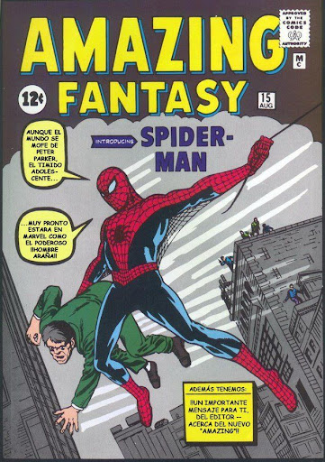

Algunos pilares básicos del legado de Spider-Man han permanecido inmutables durante muchos años, pero eso está a punto de cambiar en el presente mas inmediato de Marvel Comics. En un gran giro inesperado sobre Spider-Man, Marvel ha presentado al que se supone que es el séptimo miembro secreto de los Seis Siniestros. El equipo más icónico de villanos de Spider-Man se fundó precisamente cuando Doctor Octopus, Mysterio, Sandman, Electro, Vulture y Kraven decidieron unirse contra la amenaza común que era Peter Parker.
Marvel Comics hace una reinvención significativa sobre los Seis Siniestros
Sin embargo, La Casa de las Ideas ha confirmado que siempre hubo un séptimo miembro en el equipo, cuya sombría historia confirma que los lectores han estado engañados durante 60 años. En el cómic Spider-Man: Black Suit & Blood #3, Marvel vuelve a sus raíces al mostrar en profundidad el evento de Secret Wars. Este cruce mostró cómo varios héroes y villanos fueron llevados a un mundo alienígena para luchar en una contienda épica.
Sin embargo, no todo es como los fans recuerdan. Pese a que el lado de los villanos de Marvel reunía algunos de los rostros más reconocibles de la franquicia, la editorial también confirmó recientemente la existencia de una figura bautizada como Master Blood, quien ocultaba su verdadera identidad.
A su vez, Marvel también incluye la afirmación de que fue miembro fundador de un equipo que él recuerda como los Siete Siniestros. Este cambio sustancial en el legado de Spider-Man queda justificado cuando se ve cómo Kang se volvió contra Master Blood, quien fue el responsable de borrarlo de la línea de tiempo oficial de Marvel.
For those who have seen the Earth from space, and for the hundreds and perhaps thousands more who will, the experience most certainly changes your perspective. The things that we share in our world are far more valuable than those which divide us.
A su vez, este giro revela que la historia de Marvel que la amplia mayoría de lectores conoce es una en la que, en realidad, Master Blood jugó un papel fundamental. Ahora ha regresado tras haber pedido la mayor parte de sus recuerdos por el viaje en el tiempo al que se vio sometido por culpa de Kang. El papel que tuvo Master Blood en el equipo original de los Seis Siniestros sigue sigue siendo desconocido por el momento, pero supone un gran cambio en el lore de Marvel.
Por otro lado, esta no es la primera vez que Marvel ha acudido a ese truco de eliminar a un personaje de la continuidad oficial. En el caso que nos ocupa, lo único claro sobre el caso de Master Blood es que, si bien los lectores son conscientes de que fue eliminado de la línea de tiempo, es probable que regrese al Universo Marvel antes de lo que se piensa
El cómic Spider-Man: Black Suit & Blood #3 ya está disponible. El cómic Spider-Man: Black Suit & Blood #3 ya está disponible.